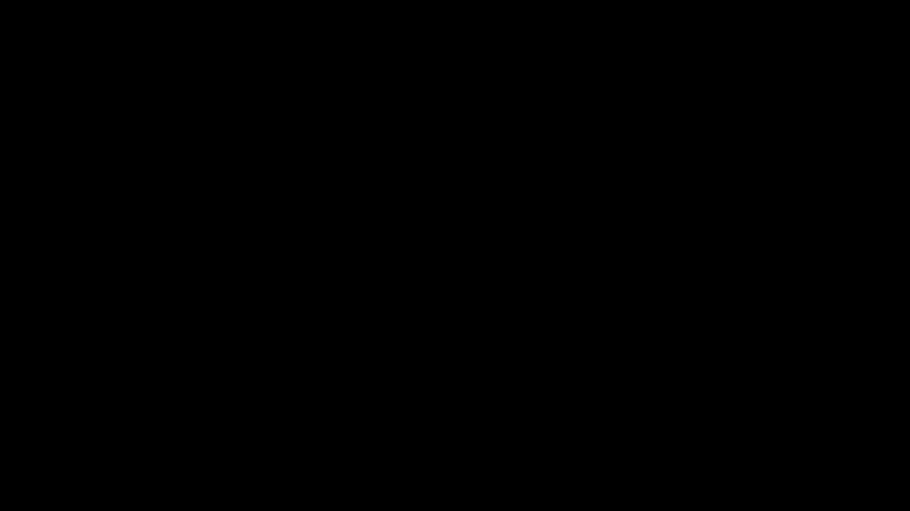

Long Short-Term Memory

| Architecture Type | Gated Recurrent Neural Network |
|---|---|
| Key Innovation | Constant Error Carousel (CEC) and gating mechanisms (Input, Output, Forget gates). |
| Performance Metric | Ability to learn dependencies over 1000+ time steps where standard RNNs fail. |
| Computational Efficiency | O(1) per time step and parameter; local in space and time. |
| Venue | Neural Computation |
| Year | 1997 |
| Citations | 102893 |
| DOI | Link |
Long Short-Term Memory (LSTM) is a landmark recurrent neural network (RNN) architecture designed to overcome the vanishing gradient problem, enabling the learning of long-range dependencies in sequential data. By introducing a novel 'constant error carousel' (cec) and a system of gating units, LSTM allows gradients to flow through time without decaying or exploding. This architecture revolutionized sequence modeling and served as the state-of-the-art for tasks like speech recognition, translation, and handwriting synthesis for over two decades.
The Vanishing Gradient Problem
Before LSTM, training recurrent Neural Networks (RNNs) on long sequences was notoriously difficult. As gradients are backpropaltiplicative unit that controls information flow.">gated through time, they are repeatedly multiplied by the weights of the recurrent connections. If these weights are small, the gradient vanishes exponentially, making it impossible for the network to learn long-term dependencies.
Hochreiter and Schmidhuber identified this fundamental flaw and proposed a structural solution: a memory cell that can maintain its state over long periods. This led to the creation of the LSTM, which uses a linear unit with a fixed self-connection of weight 1.0, ensuring that the error signal remains constant as it flows back through time.
The Memory Cell and Gating Mechanism
The core of the LSTM is the memory cell, which acts as a storage unit for information. Access to this cell is controlled by three specialized 'ltiplicative unit that controls information flow.">gates':
1. **Input ltiplicative unit that controls information flow.">gate**: Decides which new information from the current input and previous hidden state should be stored in the memory cell. 2. **Forget ltiplicative unit that controls information flow.">gate**: (Added in later versions, but conceptualized here) Determines which information is no longer relevant and should be discarded from the cell. 3. **Output ltiplicative unit that controls information flow.">gate**: Controls which part of the current memory cell state should be used to calculate the hidden state and output of the network.
These ltiplicative unit that controls information flow.">gates are themselves neural networks with sigmoid activations, allowing the LSTM to learn to selectively remember or forget information based on the context of the sequence.
Constant Error Carousel (CEC)
The cec is the theoretical heart of the LSTM. It refers to the linear unit within the memory cell that has a self-recurrent connection with a fixed weight of 1. By avoiding the non-linear activations typically found in RNN recurrent loops, the cec prevents the gradient from being squashed or blown up during gradient that is needed in the calculation of the weights to be used in the network.">backpropagation.
This 'carousel' allows error signals to circulate indefinitely, effectively bridging the gap between distant events in a sequence. The gating units act as the 'doors' to this carousel, ensuring that it is only updated with meaningful data and only influences the output when necessary.
Impact on Deep Learning
The introduction of LSTM was a turning point for artificial intelligence. It proved that neural networks could handle complex, real-world temporal data. For many years, LSTMs were the backbone of major commercial AI systems, including Google's speech recognition and Apple's Siri.
While Transformers have largely superseded LSTMs for many large-scale language tasks due to their parallelization capabilities, the principles of gating and residual-like connections (found in the cec) remain central to modern deep learning architecture design.
Concept Breakdown
A container that holds information over time, protected by gating units to maintain long-term dependencies.
The use of multiplicative units to regulate the flow of information into, out of, and within the memory cell.
The tendency of gradients to become zero during gradient that is needed in the calculation of the weights to be used in the network.">backpropagation in deep or recurrent networks, which LSTM prevents.
Constant Error Carousel; the linear internal state of an LSTM cell that preserves the gradient signal over time.
The algorithm used to train recurrent networks by unfolding them into a deep feed-forward network.
Mathematics
Cell State Update
| Symbol | Meaning |
|---|---|
| $c_t$ | Memory cell state at time t |
| $f_t, i_t$ | Forget and Input gate activations |
| $\tilde{c}_t$ | Candidate values for the memory cell |